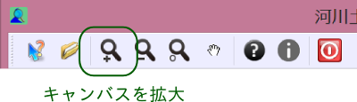
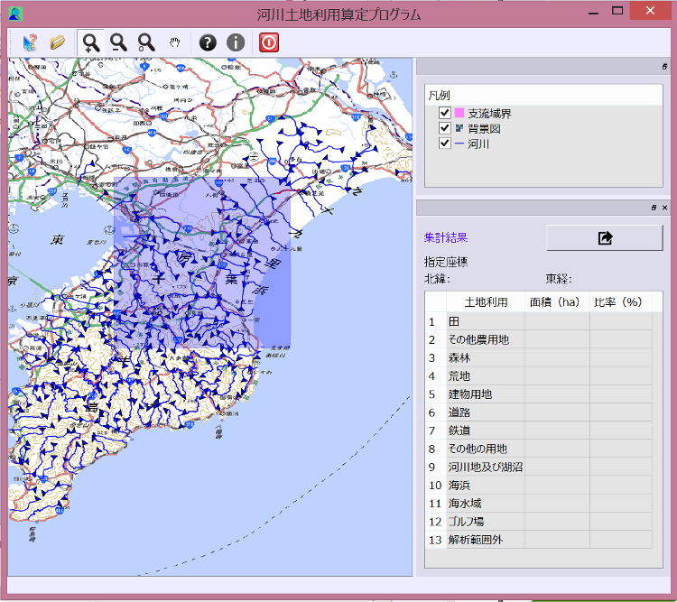
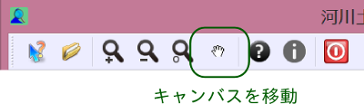
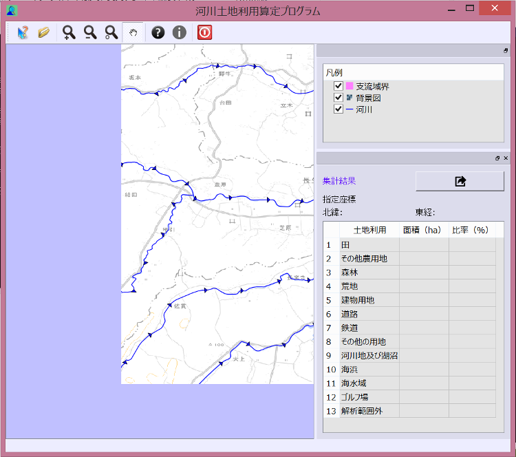
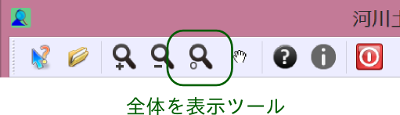

マップウィンドウをズームインするには、ツールバーの「キャンバスを拡大」ボタンを選択します。
選択後、マップキャンバス内の領域をマウスの左ボタンをドラッグすると、ドラッグした矩形領域を拡大します。
縮小する場合は、ツールバーの「キャンバスを縮小」ボタンを選択して、マップキャンバス上の点をクリックします。
また、マップキャンバス上にマウスカーソルがある状態で、マウスホイールによる拡大縮小をすることもできます。
マップキャンバスを移動するには、ツールバーの「キャンバスを移動」ボタンを選択します。
選択後、マウスの左ボタンでマップキャンバス上をドラッグすると、下図のように移動します。
または、マウスの中ボタンを押しながらキャンバス上をドラッグすることで移動することもできます。
ツールバーの「全体表示」ボタンを押すと、地図がある範囲（背景画像の範囲）全体を表示します。
